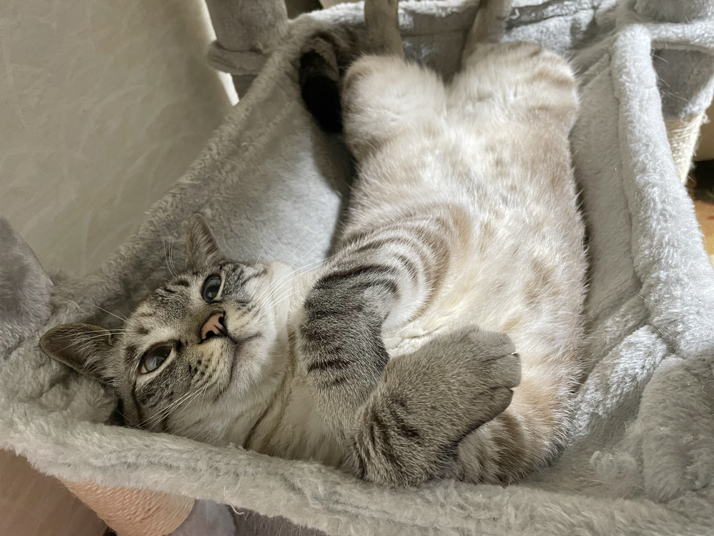
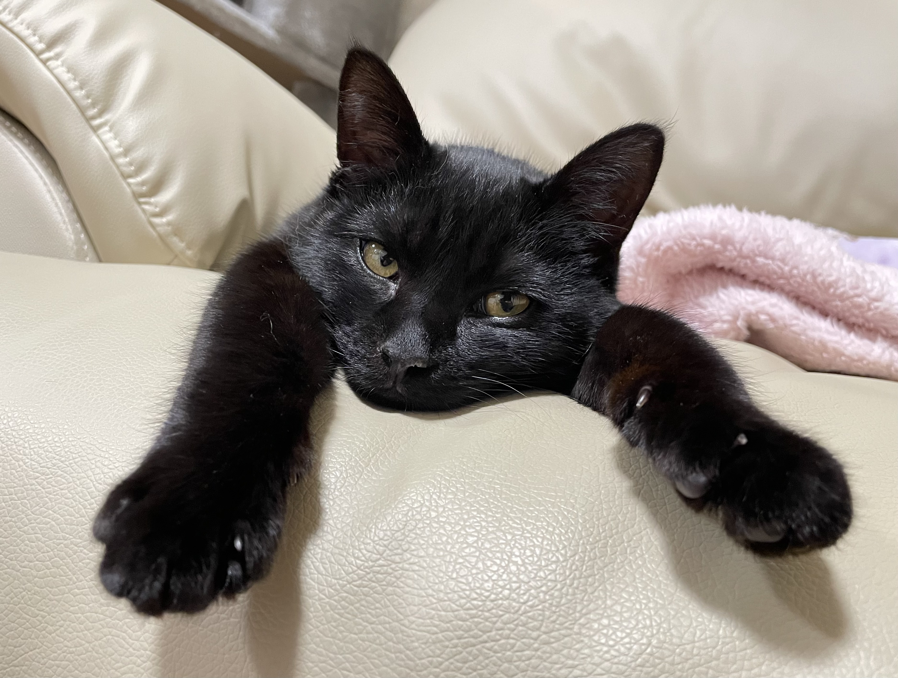
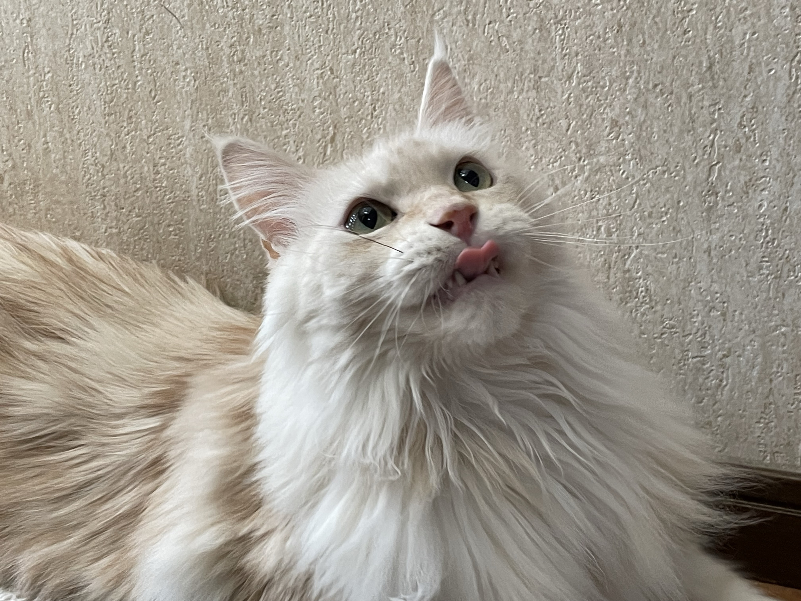

はじめに
このサイトでは、我が家のにゃんこたちについて紹介したいと思います
それぞれ性格の違う我が家のにゃんこたちをご堪能ください♪
プロフィール
―ポテト―
まずは、最年長のポテトから紹介します。ポテトは３匹の中で一番身体が大きいですが、
とても怖がりで温厚な性格です。
撫でられるのが大好きなので、手を顔の辺りに近づけただけですぐに自分から撫でられに来ます。
あと、ご飯を食べている途中にほかの子に横取りされることがよくあります。
とられても目の前でじっと待つだけで、何故か怒りません( ´∀｀ )

―ココア―
次は、３匹の中で一番身体がぷにぷにしているココアを紹介します。
好物はちゅーるで、母によくねだってきます。
きっとちゅーるの食べ過ぎでぷにぷにになってしまったのでしょう。
もちろんポテトにもあげていますが、お腹が弱いのでほんの少ししか上げられません（´・ω・｀）
そして、ココアは季節関係なく膝の上によく乗ってくるので夏は暑くてたまりません（笑）

―ゴマ―
最後に、甘えん坊のゴマを紹介します。ゴマはまだ生後１１ヶ月で、
元気が有り余っているのかいつも家中を走り回っています。
おもちゃで遊ぶのが好きで、手におもちゃを持って音を立てただけで
家のどこにいてもすぐに走ってきます。
あと、ココアによくちょっかいをかけては怒られていますが、
懲りずに何回も行くような元気な子です((´∀｀*))
 猫のギャラリー
猫のギャラリー
